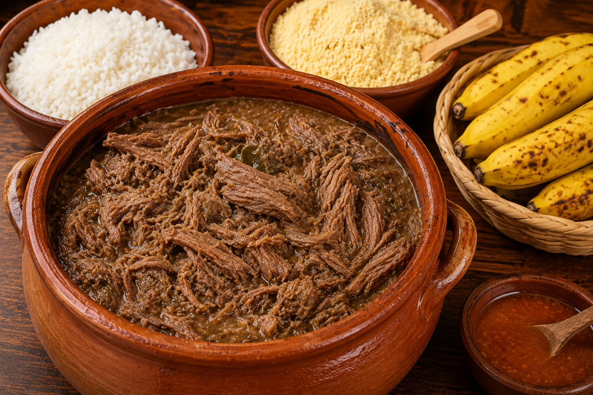
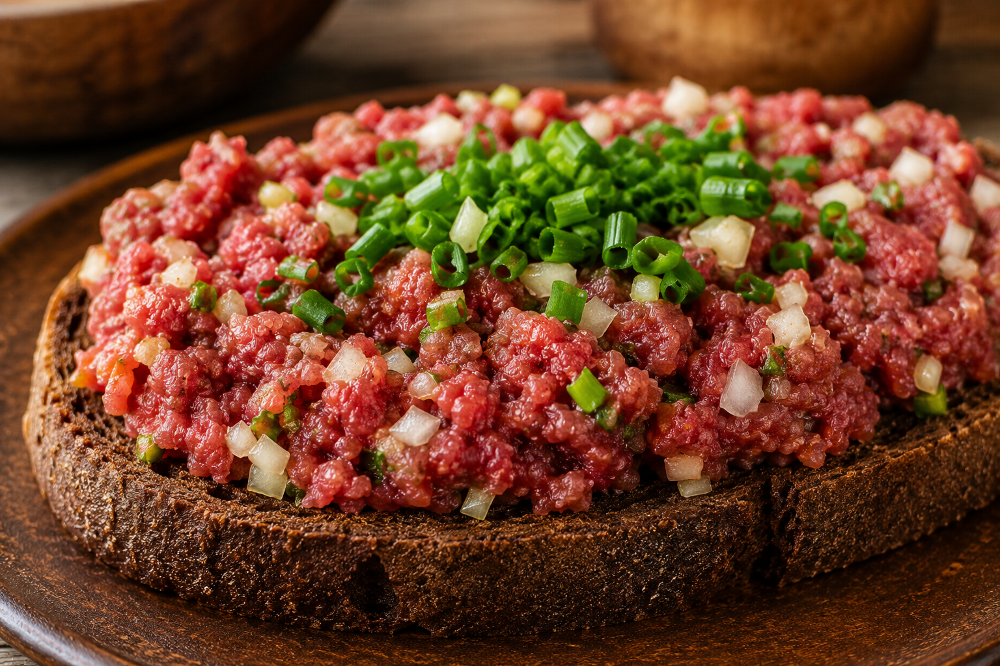

História da Gastronomia Curitibana
A gastronomia curitibana é resultado da mistura de diferentes culturas que ajudaram a formar a cidade ao longo dos séculos. Desde sua fundação, Curitiba recebeu povos de diversas origens, especialmente imigrantes europeus, que trouxeram costumes, receitas e ingredientes característicos de seus países. Além das influências estrangeiras, a gastronomia local também incorporou ingredientes e tradições dos povos indígenas e dos tropeiros.
Barreado: O Prato Mais Tradicional do Paraná
O barreado é considerado um dos pratos mais tradicionais do estado do Paraná. Sua origem está ligada ao litoral paranaense, especialmente às cidades de Morretes, Antonina e Paranaguá. O prato é preparado com carne bovina cozida lentamente em uma panela de barro e tradicionalmente é servido com farinha de mandioca, arroz e banana.

Carne de Onça: Patrimônio Gastronômico de Curitiba
A carne de onça é um dos pratos mais famosos da capital paranaense e foi reconhecida como patrimônio cultural imaterial de Curitiba. Apesar do nome, não possui relação com carne de onça. O prato é preparado com carne bovina crua e moída, servida sobre uma fatia de broa escura.

Influência dos Imigrantes na Culinária Curitibana
A culinária de Curitiba foi profundamente influenciada pelos imigrantes alemães, italianos, poloneses, ucranianos e japoneses. Eles trouxeram receitas, técnicas culinárias e ingredientes que enriqueceram a gastronomia local, tornando Curitiba uma cidade conhecida por sua diversidade gastronômica.